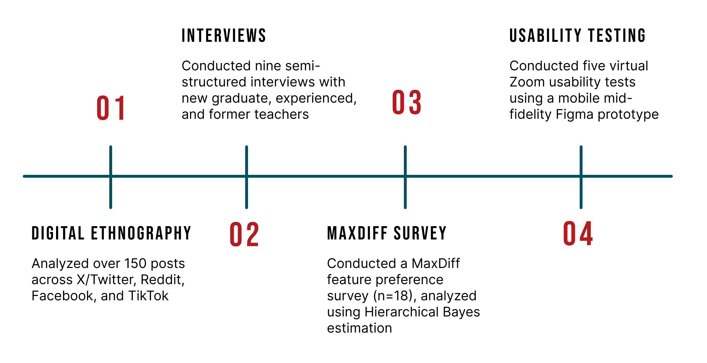
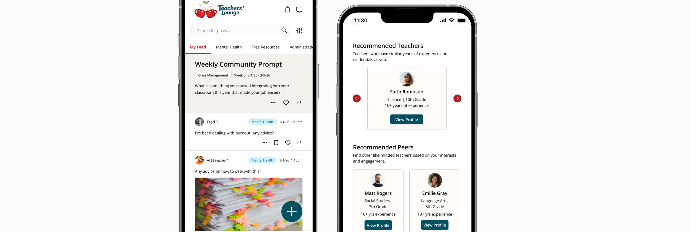
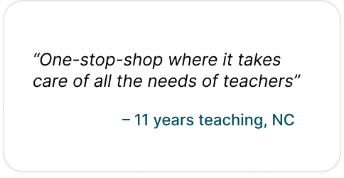
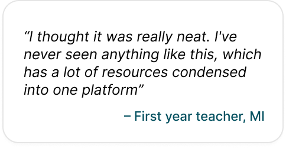
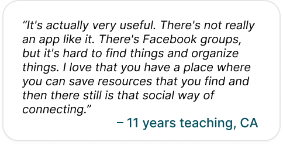

🏆 1st Place Prize at the University of Michigan School of Information
Exposition ‘26, in the category of Life-changing Education.
Teachers’ Lounge is an application where teachers help teachers. It
meets teachers where they are in an always-accessible digital community
designed to facilitate mentorship among K–12 educators in a way that is
supportive, collaborative, and approachable.
Tools
Figma and Figjam
Duration
3.5 months (2026)
Contributions
Domain over discover page, mentorship matching, library, and profile
creation.
Collaborators
2 UX Researchers and 1 UX Designer
Problem Statement
44% of new teachers exit the profession within 5
years. How might we facilitate informal mentorship for early career
K-12 teachers to increase retention and job satisfaction in the field?
Challenge & Goals
While systemic issues such as compensation, policy, and institutional
support play a central role, these factors are often slow to change
and outside the scope of individual schools or designers to address
directly.
This project is motivated by the need to understand and alleviate the
daily, compounding burdens that contribute to burnout, diminished job
satisfaction, and ultimately attrition which newly graduated K–12
teachers experience. Rather than attempting to solve structural
problems embedded in the education system, this project seeks to
identify specific, addressable burdens and design a supportive digital
community around them.
Research Methods
For our research, we conducted a preliminary literature review to
understand the problem scope, a digital ethnography to comprehend
teacher sentiment in their profession, interviews from early career and
experienced teachers, a MaxDiff survey to prioritize features, and
usability testing to gather feedback on the product.

Key Findings
Teacher Burnout Driven by Administrative Burden, Classroom
Behavior, Lack of Support, and Mental Health
Teacher burnout is not just about workload. It is driven by
administrative misalignment, lack of support, and isolation.
Administration plays a key role in defining the school
environment and teacher experience.
“I felt very lucky that the principal I worked under was
absolutely amazing. Leadership makes a huge difference. It
creates the whole community, from adults down to children.” –
P11, over 20 years teaching
Early Career Teachers Need More Support
Current gaps in mentorship include preparation and support in
the first few months of teaching and guidance in lessening
administrative burden.
“Balancing learning curriculum, learning how to teach, and
learning classroom management all at once was overwhelming.” –
P8, former teacher
Positive Mentoring Relationships Are Impactful
Environments that foster positive mentoring relationships and
improve well-being for teachers are supportive, collaborative,
and approachable.
“There were just teachers who saw me...as a brand new
23-year-old person who needed help and guidance, and so they did
it because…teachers inherently recognize that, and they reach
out to fill that need.” – P9, retired after over 20 years
teaching
Design Concept: A Novel Social Network
No social network or centralized hub is currently dedicated to serving
teachers. This creates a clear opportunity to build a digital community
where educators can: seek advice, share experiences, find resources,
and build meaningful connections. Teachers’ Lounge is exclusive to
only teachers where they can have transparent, supportive conversations.
Core Platform Needs & Design Requirements:
Center platform interaction around advice, support, and accessible
resources
Develop community guidelines around respect, professionalism, and
confidentiality

Facilitating Conversation
The Threads page serves as a public hub where the user’s experience is
customized through interests they selected during the onboarding
process. The user can peruse the threads of these selected topics
through the scrollable navigation at the top of the page, or explore
the mixed personalized topics in "My Feed".
While creating a post, we included the option of posting anonymously,
so the platform provides a safe outlet for teachers to seek advice on
sensitive matters (such as burnout or administrative friction) without
the risk of professional exposure.
Discovering Resources & Mentor Matching
The main goal of our platform is to foster community but also to
provide mentorship. Mentorship is not one size fits all and we designed
our platform to represent the various needs of our teacher population.
On the Discover page you will find resources such as lesson plans,
highlighted podcast episodes, and trending discussions.
In the Grow Your Lounge, users will find opportunities to connect with
teachers who are recommended to them based on their years of experience
and credentials, recommended peers based on engagement on the platform,
recommended mentors who have similar years of experience, and mentees
who are looking for someone more senior.
Organized Library
The Library is where our users will find their saved resources from
the Discover page along with posts from the Threads page. Additionally,
in the Library there is filtering based on the type of resource such as
lesson plans, activities, and posts. Another section of our Library is
the Boards where teachers can organize collections of resources.
Impact: What Teachers Are Saying



Next Steps & Reflection
The next step in our team’s journey includes technical feasibility. We want to:
Build a secure database to support user profiles, contextual
personalization, and mentorship matching.
Design for iOS, Android, and web to ensure accessibility and
flexibility across teacher workflows.
Implement strong data protections, user verification, and clear
privacy controls to support safe engagement.
Develop an initial, functional prototype, leveraging vibe coding
tools such as Claude Code and Figma MCP for rapid iteration.